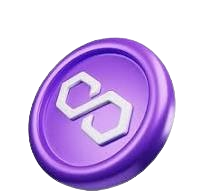

IBSToken is a blockchain-based ecosystem dedicated to providing high-quality cryptocurrency education globally.
Overview: IBS Token is a blockchain-based ecosystem designed to bridge the knowledge gap in the cryptocurrency space. Our mission is to provide high-quality education, resources,
and support for individuals to navigate the complex world of digital assets.
With our pilot product IBS ACADEMY offering Digital Videos and live Zoom sessions, and other learning experiences, having attracted over 20,000 members to the community, IBS TOKEN is aiming
at forming an engaging ecosystem of community-owned economies by facilitating and optimizing the onboarding flows for all Web3 pathfinders.
2. Mission And Vision
Mission:
Empowering individuals with accessible, high-quality crypto education and services, fostering financial literacy,
and promoting innovation through our comprehensive IBS Academy ecosystem.
Vision:
To become the leading crypto education platform, bridging the knowledge gap and driving global adoption,
while creating a sustainable, community-driven ecosystem that rewards learning, innovation, and contribution.
3. Smart contract
IBSToken is a cryptocurrency token built on the Polygon(POL) blockchain.
The smart contract governs token creation, transfers, and approvals. It is written in Solidity and handles token management on-chain.
BENEFITS OF SMART CONTRACT
The benefits of the IBSToken smart contract can be defined with the following key:
1. Transparency: All transactions and token operations are visible on the blockchain, ensuring accountability.
2. Automation & Efficiency: Predefined rules in the smart contract execute transactions autoPolygonally, reducing manual intervention and errors.
3. Cost-Effectiveness: Operating on the Polygon (POL) blockchain ensures low transaction fees compared to other networks.
4. Security & Immutability: Once deployed, the smart contract cannot be altered, ensuring secure and tamper-proof transactions.
5. Decentralized Control: Removes the need for intermediaries, allowing peer-to-peer interactions directly between users.
IBSTOKEN (IBS)
POWERED BY

Polygon (POL)
4. Core Values
1. Accessibility: Making crypto education available to all.
2. Quality: Delivering expert-led, engaging, and relevant content.
3. Innovation: Encouraging creativity and forward-thinking.
4. Community: Fostering collaboration, support, and recognition.
5. Transparency: Ensuring open communication and trust.
5. IBS Academy Ecosystem
1.Crypto Education: Courses, webinars, workshops, and tutorials.
2.Community Forum: Discussion, networking, and resource sharing.
3.Token Rewards: Incentivizing learning, contributing, and participating.
4.Expert Mentorship: Personalized guidance and support.
5.Resource Library: Access to curated articles, videos, and tools.
6. Goals
1. Educate 1 million individuals in crypto fundamentals within 2 years.
2. Achieve 50% user engagement in community forums and discussions.
3. Develop strategic partnerships with 10+ industry leaders.
4. Launch 5+ new courses and programs annually.
5. Maintain 95% user satisfaction rating.
7. Governance
IBS Token's governance ensures decentralized decision-making, transparency, and community involvement, aligning with its mission to empower crypto education.
Governance Bodies
1. Council of Advisors: Expert advisors providing strategic guidance.
2. Token Holders' Assembly: IBS Token holders participate in decision-making.
3. Community Forum: Open discussion platform for users and stakeholders.
2. Voting systems: Proof-of-Stake (PoS) or Delegated Proof-of-Stake (DPoS).
3. Quorum requirements: 20% of total IBS Token supply.
8. Roles and Responsibilities
1.Council of Advisors:
- Strategic guidance.
- Proposal submission.
- Community engagement.
2. Token Holders' Assembly:
- Voting on proposals.
- Decision-making.
- Community representation.
3. Community Forum:
- Open discussion.
- Feedback mechanism.
- Idea incubation.
9. Transparency and Accountability
1. Regular updates on governance decisions.
2. Publicly accessible meeting minutes.
3. Auditable voting processes.
Dispute Resolution
1. Mediation: Council of Advisors.
2. Arbitration: Independent third-party service.
Amendments IBSTOKEN
1. Proposal submission.
2. Community discussion.
3. Voting.
This governance structure ensures decentralized decision-making, community involvement,
and transparency, fostering a healthy ecosystem for IBS Token and IBS Academy.
The security of IBSToken must be the highest priority beginning at the time of its deployment. Users should investigate risks involved with IBSToken before engaging with it. There is an inherent risk that IBSToken could contain vulnerabilities or bugs causing, among other things, the complete failure of IBSToken and/or its parts.
2. Polygon (POL) chain technical risk
IBSToken on Polygon (POL) is built on top of experimental technology under active development. There is no guarantee that the Polygon network would be error-free or have a minimum uptime. Failures in Polygon might lead to validators slashing and result in a significant drop in the balance and price of the staked IBSToken.
3. IBSToken price risk
Besides the risk associated with validators' slashing and an IBSToken
token balance drop, there is a chance that the exchange price of IBSTokene.
14. Conclusion
The IBS Token project represents a revolutionary leap forward in the world of
cryptocurrency and blockchain technology. By providing a secure, decentralized, and scalable platform for crypto trading and investing, IBS Token is poised to empower individuals and institutions alike to
navigate the digital asset landscape with confidence.
With its cutting-edge features, expert-driven education, and community-focused approach, IBS Token is dedicated to
democratizing access to the crypto market and fostering a culture of financial freedom.
Join us on this groundbreaking journey, and together, let's shape the future of cryptocurrency trading and investing.